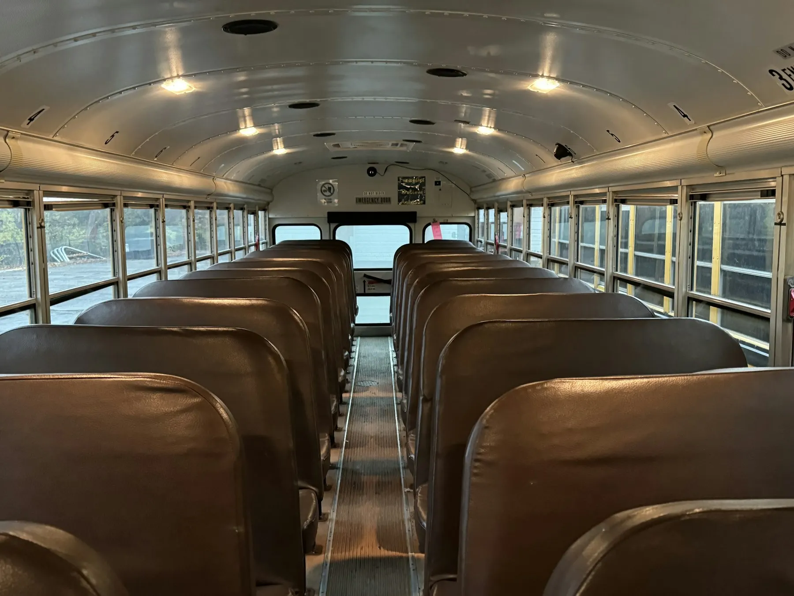

Families prepare
Parents confirm the correct route and stop, review safe waiting habits, and keep collection arrangements current.
A strong service helps families understand the route, prepare for each handoff, and find the right information at the right moment.
Families need more than a route name. They need stop context, understandable timing, safety expectations, and a dependable place to review journey information.
This website brings those pieces into a calm, connected structure that can be adapted to a verified local operation.
Plain language and visible route detail.
Students, journeys, plans, and records together.
Honest labels for illustrative information.



The route experience links practical travel details with digital tools that help parents review what is planned and what has been recorded.
See How It WorksArea, school, stop order, and timing appear before plan selection.
Each student profile keeps the assigned route and stop together.
Playback and billing documents are clearly presented as examples until real services are integrated.
Operators can connect authentication, dispatch data, messaging, payment processing, and policy content while retaining the accessible customer experience.
A useful transport experience makes it easier to understand what families, operators, and schools each need to verify.
Parents confirm the correct route and stop, review safe waiting habits, and keep collection arrangements current.
Transport teams maintain verified schedules, vehicle information, service notices, and support channels.
School teams align arrival and dismissal handoffs with the routes and authorized collection procedures in use.